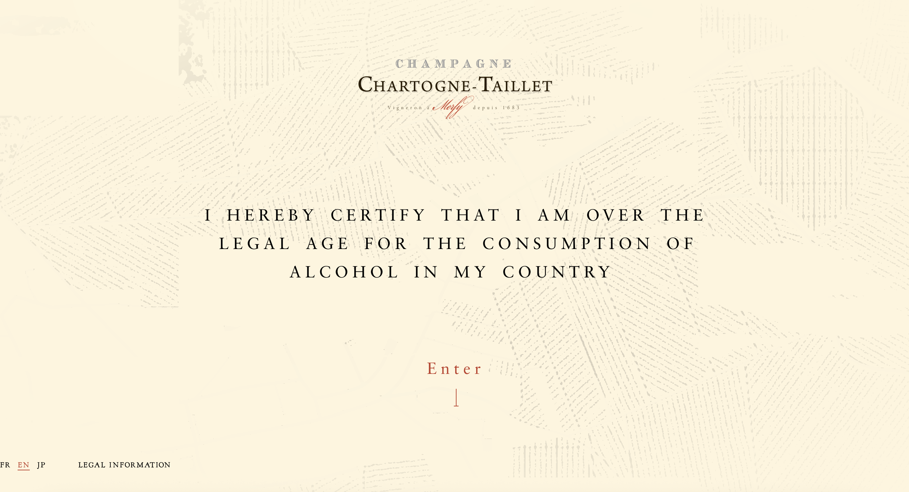
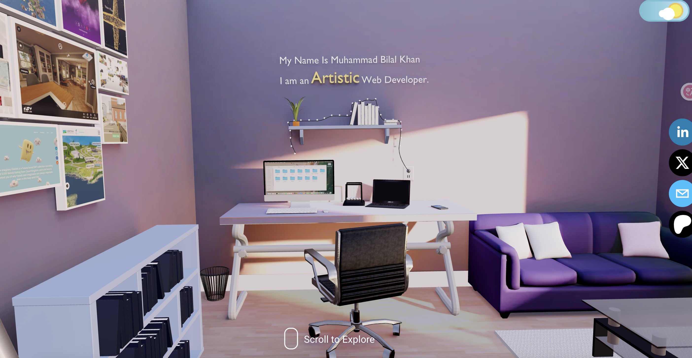

1. Chartogine-Taillet Red Wine Website.
At a glance, the visual design of this webpage is very similar to the visual strategy I’m using for my capstone project. The landing page features a clickable button that invites users to begin their journey—something I could incorporate into my own project to make the experience more engaging. I’m particularly impressed by the smooth transitions during the 3D exploration of the Chartogne-Taillet vineyard, where the camera moves are triggered by scrolling, allowing users to seamlessly navigate different areas. One feature I especially appreciate is how hovering the mouse over different regions changes their color, providing a clear and intuitive visual cue for user interaction.
2. Muhammad bilal Khan
This website presents a basic Three.js demo that showcases how camera movement can be used to explore a 3D model. It features a fully modeled interior room, where users can view different details as the camera moves through the space. While my own model won’t be as complex as this one, using camera transitions to reveal different sides and layers of my project is a highly effective method for visual storytelling and engagement.
